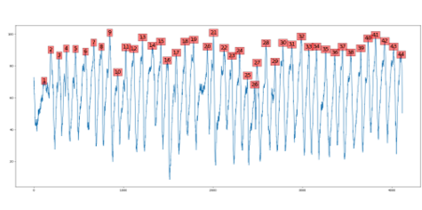

November 2021 - December 2021
- Automated the frame extraction process from training videos and incorporated them to train a transformer-based deep network to map the hip, knee, and ankle joints
- Developed post processing script for peak detection and normalization of knee-flexion angle from the transformer network output
- Integrated the workflow to connect Data Acquisition Unit (DAQ) with an amplifier and developed signal processing scripts for analyzing electromyographic signal data to map the network inferred data
- Scripting FDA using PCA analysis for the GAIT data and prediction of time series data with machine learning models
- Quantification of muscle fibers using UNET mode
Detection of keypoints (joints) in one frame

Peak Detection (knee extention points in a video frame)
Combined plot of normalized EMG and GAIT data
Keypoint Detection in a Video Frame